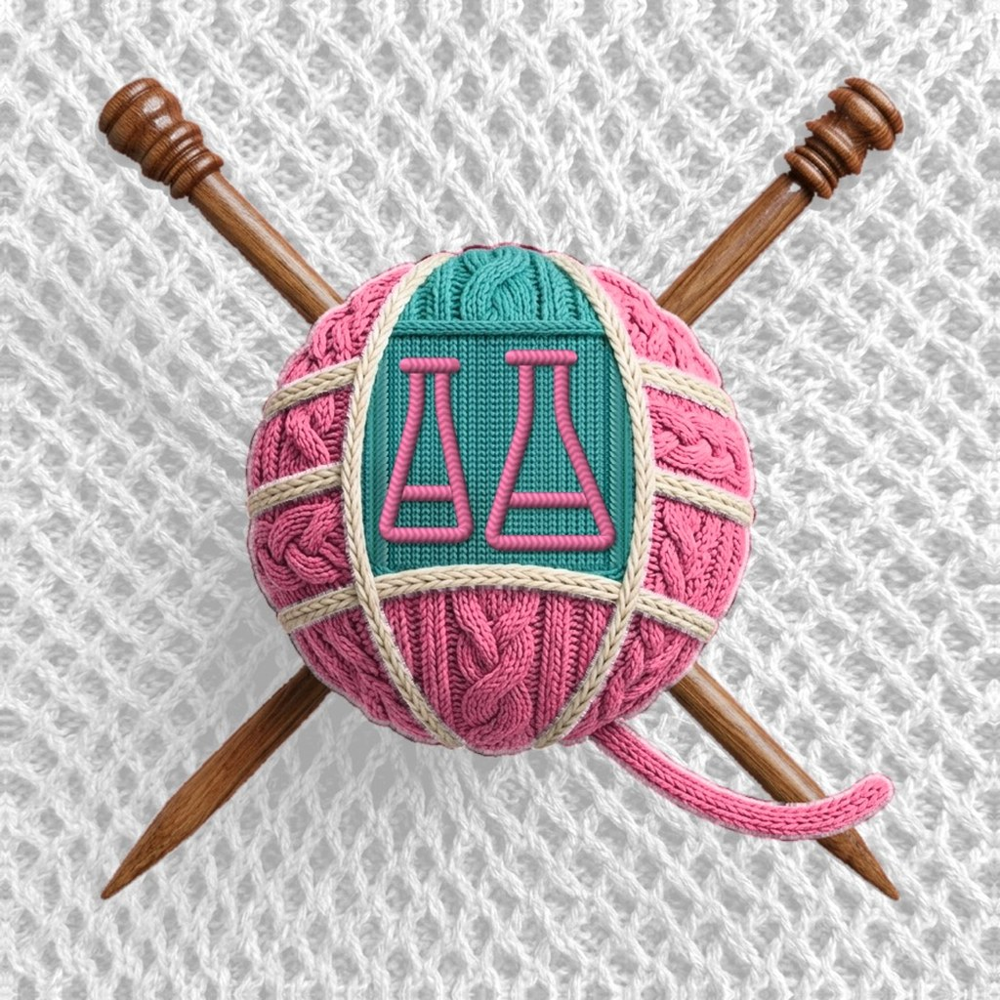
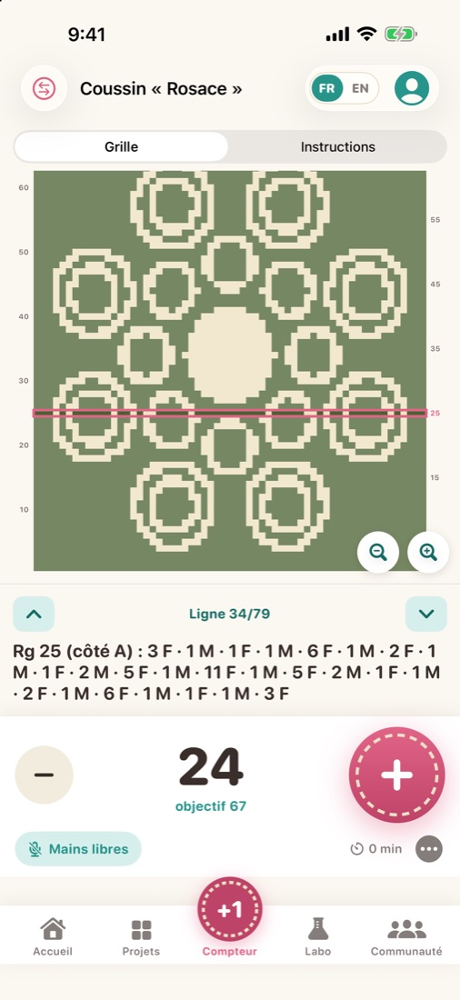
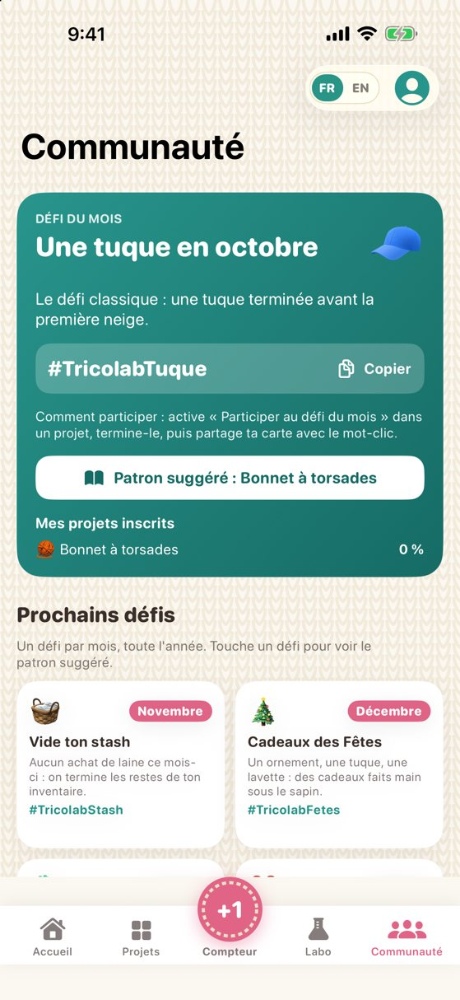

Tricot · crochet · scrapbook
Le labo de tes créations
Un compteur de rangs pensé pour les mains occupées, des patrons qui ne perdent jamais ta place et des motifs que tu ne trouveras nulle part ailleurs. Tricot et crochet, en français et en anglais.

Ce que fait Tricolab
Compteur mains libres
Un très gros bouton +, l'écran qui reste allumé, et la voix : dis « suivant » ou « retour » sans lâcher tes aiguilles.
Un patron qui suit ta ligne
Importe un PDF, photographie un patron papier ou colle son texte. La ligne en cours est surlignée et les abréviations sont traduites en clair.
30 patrons originaux
Cinq styles : Classique, Moderne, Rustique, Émoticône et Crop circle. Dessin de l'objet fini, schéma coté et tailles qui recalculent les instructions.
Générateur de motifs
20 motifs en grille — crop circle, pêche, construction, feuilles — à ta taille et à tes couleurs, avec les rangs écrits automatiquement.
Le Labo
Techniques pas à pas, matériel, exemples de schémas, dictionnaire d'abréviations et calculateurs de jauge, de taille et de laine.
Partage et motivation
Une carte de fin de projet à partager, un défi par mois, des badges et ton bilan annuel.
Aperçu







Gratuite, avec un achat unique facultatif
Le compteur mains libres, le lecteur de patrons, 5 patrons de lancement, 3 motifs crop circle, le Labo, les défis et les cartes à partager sont inclus. L'achat unique « Tricolab Complet » (4,99 $ CA) débloque les 25 autres patrons et les 17 autres motifs. Pas d'abonnement.
Tes données restent chez toi
Aucun compte, aucune publicité, aucun traceur. Tes projets, photos et patrons restent sur ton appareil. Lire la politique de confidentialité.
Prêt à tricoter, crocheter, créer ?
Tricolab est disponible sur l'App Store, pour iPhone et iPad. Gratuite, avec un achat unique facultatif.
Télécharger sur l'App Store